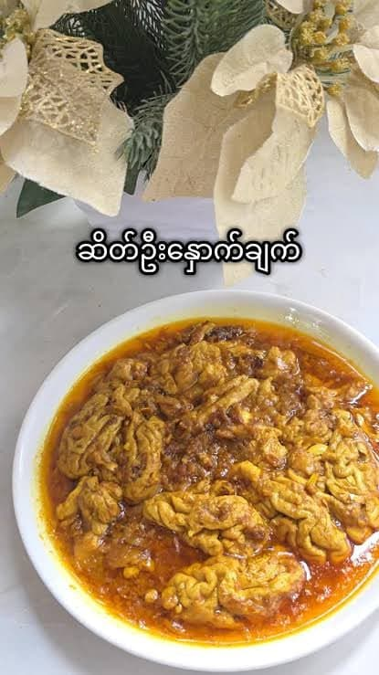
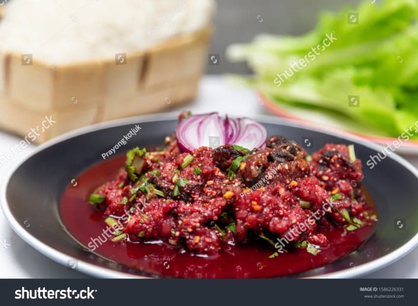
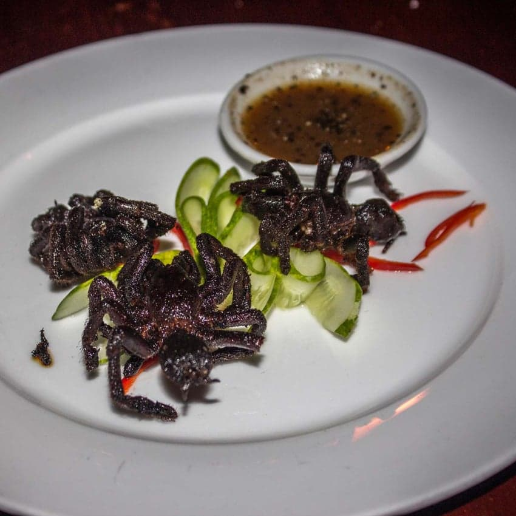
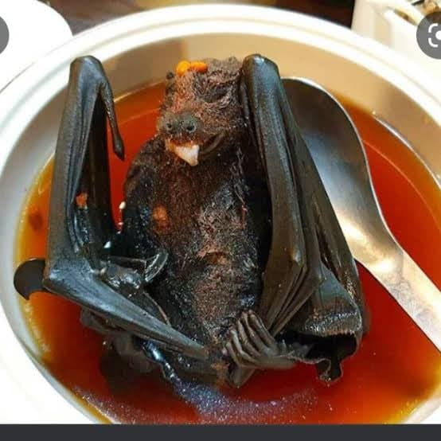
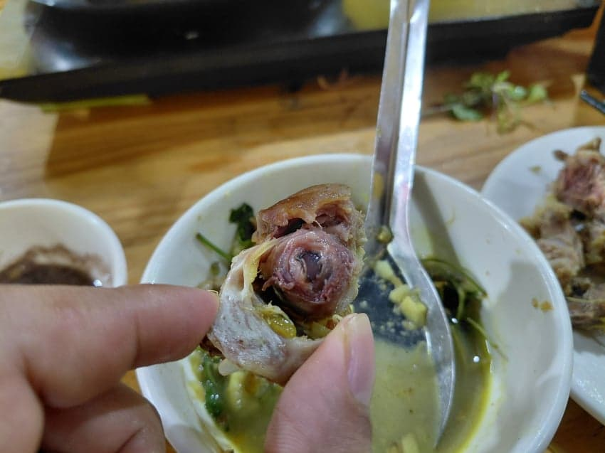
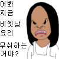
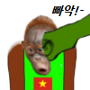
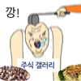

미얀마 - 우나욱 힌
소나 돼지등의 뇌로 만든 커리

태국-라오스의 랍
고수와 민트 등의 향신료와 고기를 버무린 요리
볶을 수도 있으나 생으로도 먹는다.

캄보디아 - 아핑
튀긴 타란툴라이다.

인도네시아 박쥐 수프

베트남 라우 메오
삶은 고양이
- dc official App





댓글
수집 당시 댓글 176개
· ㅇㅇ · 11.17 19:08:52
· 11 · 11.17 19:10:59
· ㅇㅇ · 11.17 19:15:55
· 무삭제요리 · 11.17 19:16:22
금발양아치누나 · 11.17 18:04:30
· 무삭제요리 · 11.17 18:35:34
ㅇㅇ · 11.17 18:04:42
· 무삭제요리 · 11.17 18:35:38
ㅇㅇ · 11.17 18:04:58
· 무삭제요리 · 11.17 18:35:43
2456778 · 11.17 18:05:08
· ㅇㅇ · 11.17 18:08:16
머거
ㅇㅇ · 11.17 18:05:53
· 무삭제요리 · 11.17 18:35:57
ㅇㅇ · 11.17 18:06:14
· 무삭제요리 · 11.17 18:36:07
연길왕홍창 · 11.17 18:06:23

· 2456778 · 11.17 18:11:11
· 무삭제요리 · 11.17 18:36:12
ㅇㅇ · 11.17 18:06:36
· 무삭제요리 · 11.17 18:36:15
ㅇㅇ · 11.17 18:06:49
· 무삭제요리 · 11.17 18:36:24
ㅇㅇ · 11.17 18:07:22
· ㅇㅇ · 11.17 18:08:11
· 무삭제요리 · 11.17 18:42:23
· ㅇㅇ · 11.17 18:43:11
아르웬의구리유두 · 11.17 18:07:33
· 무삭제요리 · 11.17 18:42:34
Redpill_はる · 11.17 18:08:39
· Redpill_はる · 11.17 18:08:51
· ㅇㅇ · 11.17 18:09:45
· Redpill_はる · 11.17 18:11:27
· ㅇㅇ · 11.17 18:12:08
· Redpill_はる · 11.17 18:17:56
· ㅇㅇ · 11.17 18:19:27
· Redpill_はる · 11.17 19:33:22
· ㅇㅇ · 11.17 19:36:25
ㅇㅇ · 11.17 18:09:34
· ㅇㅇ · 11.17 18:10:34
· ㅁㄴㅇ · 11.17 18:15:38
ㅇㅇ · 11.17 18:10:15
ㅇㅇ · 11.17 18:13:36
· ㅇㅇ · 11.17 18:14:07
· ㅇㅇ · 11.17 18:36:01
ㅇㅇ · 11.17 18:15:31
· ㅇㅇ · 11.17 18:16:30
ㅇㅇ · 11.17 18:16:58
· ㅇㅇ · 11.17 18:17:19
ㅇㄱㄹㅇ
ㅇㅇ · 11.17 18:17:18
· ㅇㅇ · 11.17 18:18:04
ㅇㅇ · 11.17 18:17:50
ㅇㅇ · 11.17 18:18:02
· ㅇㅇ · 11.17 18:18:21
ㄹㅇㅋㅋ
· ㅇㅇ · 11.17 18:19:11
ㅇㅇ · 11.17 18:18:09
ㅇㅇ · 11.17 18:19:12
ㅇㅇ · 11.17 18:19:26
ㅇㅇ · 11.17 18:21:13
ㅇㅇ · 11.17 18:23:32
· ㅇㅇ · 11.17 18:23:37
ㅇㅇ · 11.17 18:23:51
ㅇㅇ · 11.17 18:25:28
이응 · 11.17 18:29:41
이응 · 11.17 18:29:53
ㅇㅇ · 11.17 18:29:53
ㅇㅇ · 11.17 18:29:59
· ㅇㅇ · 11.17 18:31:14
· ㅇㅇ · 11.17 19:38:20
룰루리오 · 11.17 18:30:55
나는원숭이 · 11.17 18:31:02
ㅇㅇ · 11.17 18:32:32
ㅇㅇ · 11.17 18:34:24
ㅇㅇ · 11.17 18:36:06
ㅇㅇ · 11.17 18:36:24
씹덕1018일차 · 11.17 18:36:47
알카 · 11.17 18:38:45
ㅇㅇ · 11.17 18:43:51
ㅇㅇ · 11.17 18:43:55
ㅇㅇ · 11.17 18:53:11
ㅇㅇ · 11.17 18:53:11
ㅇㅇ · 11.17 18:58:12
ㅇㅇ · 11.17 18:58:32
1찍들
허버허버
ㅇㅇ · 11.17 18:59:30
heyzle · 11.17 18:59:58
ㅇㅇ · 11.17 19:09:37
ㅇㅇ · 11.17 19:10:11
ㅇㅇ · 11.17 19:15:10
탄창잃어버림 · 11.17 19:17:58
ㅇㅇ · 11.17 19:27:13
ㅇㅇ · 11.17 19:36:47
ㅇㅇ · 11.17 19:39:22
ㅇㅇ · 11.17 19:42:06
ㅇㅇ · 11.17 19:48:04
· ㅇㅇ · 11.17 19:48:17
ㅇㅇ · 11.17 19:48:05
삼줌마 · 11.17 19:51:05
ㅇㅇ · 11.17 20:12:46
ㅇㅇ · 11.17 20:15:35
ㅇㅇ · 11.17 20:17:31
ㅇㅇ · 11.17 16:27:44
· 무삭제요리 · 11.17 16:28:12
ㅇㅇ · 11.17 16:27:48
· 무삭제요리 · 11.17 16:28:23
ㅇㅇ · 11.17 16:28:29
· 무삭제요리 · 11.17 16:29:18
· ㅇㅇ · 11.17 16:29:48
· 무삭제요리 · 11.17 16:30:33
· 무삭제요리 · 11.17 16:30:37
· ㅇㅇ · 11.17 16:31:38
· 무삭제요리 · 11.17 16:33:19
· ㅇㅇ · 11.17 16:36:37
· 무삭제요리 · 11.17 16:38:04
· ㅇㅇ · 11.17 16:42:50
· ㅇㅇ · 11.17 18:05:43
ㅇㅇ · 11.17 16:29:07
· 무삭제요리 · 11.17 16:29:55
ㅇㅇ · 11.17 16:30:18
· 무삭제요리 · 11.17 16:31:09
PyaPya · 11.17 16:34:05
개댇지 · 11.17 16:35:39
· 무삭제요리 · 11.17 17:00:45
ㅇㅇ · 11.17 16:42:47
· ㅇㅇ · 11.17 16:45:51
· 무삭제요리 · 11.17 17:01:07
ㅇㅇ1 · 11.17 16:54:05
· 무삭제요리 · 11.17 17:01:03
ㅇㅇ · 11.17 16:55:34
· 무삭제요리 · 11.17 17:01:17
· ㅁㄴㅇ · 11.17 18:10:40
· ㅇㅇ · 11.17 18:37:31
로지보리자파궁열항탈문장질사내정임낙신태 · 11.17 16:56:25
· 무삭제요리 · 11.17 17:01:25
추종자0 · 11.17 16:58:00
· 무삭제요리 · 11.17 17:01:35
ㅇㅇ · 11.17 16:58:26
· 무삭제요리 · 11.17 17:00:34
술담배여자도박 · 11.17 17:10:59
· 무삭제요리 · 11.17 17:23:16
보추사랑꾼 · 11.17 17:20:47
· 무삭제요리 · 11.17 17:23:24
ㅇㅇ · 11.17 17:22:23
ㅇㅇ · 11.17 17:37:04
ㅇㅇ · 11.17 17:55:22
봇치쟝 · 11.17 18:01:46
· 무삭제요리 · 11.17 18:27:51
· 봇치쟝 · 11.17 18:31:05
2대남 · 11.17 18:02:02

· index · 11.17 18:02:18

· 2456778 · 11.17 18:06:11
· 무삭제요리 · 11.17 18:27:59
ㅇㅇ · 11.17 18:02:12
· 무삭제요리 · 11.17 18:28:07
DC전사쿠루미쨩 · 11.17 18:02:36
· 2456778 · 11.17 18:06:06
롤갤러 · 11.17 18:02:38
· 무삭제요리 · 11.17 18:28:18
· 무삭제요리 · 11.17 18:28:20
샨테 · 11.17 18:02:49
· 무삭제요리 · 11.17 18:28:25
ㅇㅇ · 11.17 18:03:02
삭제됨 · 11.17 18:03:08
· 무삭제요리 · 11.17 18:28:33
ㅇㅇ · 11.17 18:03:08
· ㅇㅇ · 11.17 18:03:40
· 무삭제요리 · 11.17 18:34:35
ㅇㅇ · 11.17 18:03:11
· ㅇㅇ · 11.17 18:07:47
· ㅇㅇ · 11.17 18:09:33
· ㅇㅇ · 11.17 18:10:49
· ㅇㅇ · 11.17 18:12:35
· ㅁㄴㅇ · 11.17 18:12:56
· ㅇㅇ · 11.17 18:20:26
· ㅇㅇ · 11.17 18:26:07
· 무삭제요리 · 11.17 18:35:27
· ㅇㅇ · 11.17 19:08:26